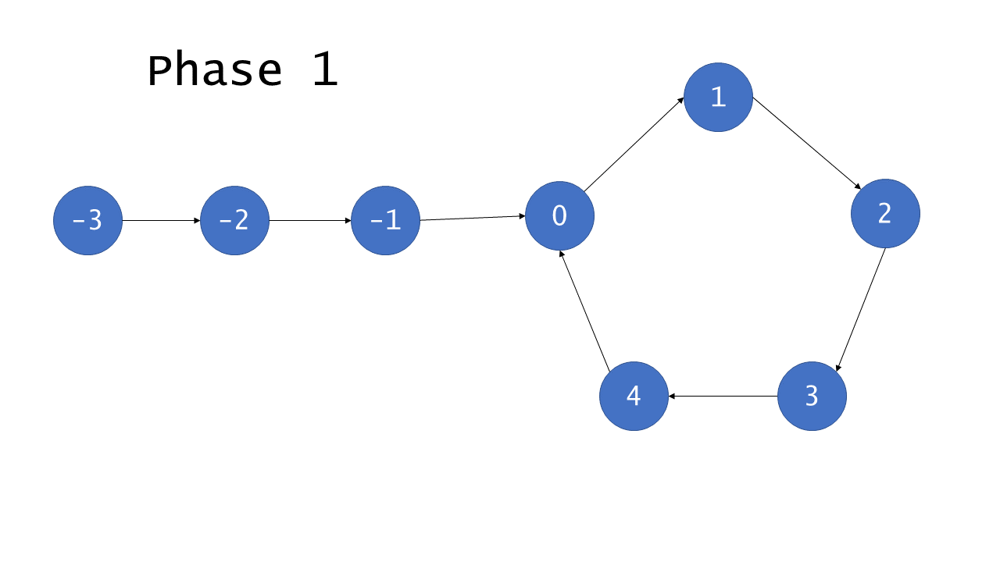
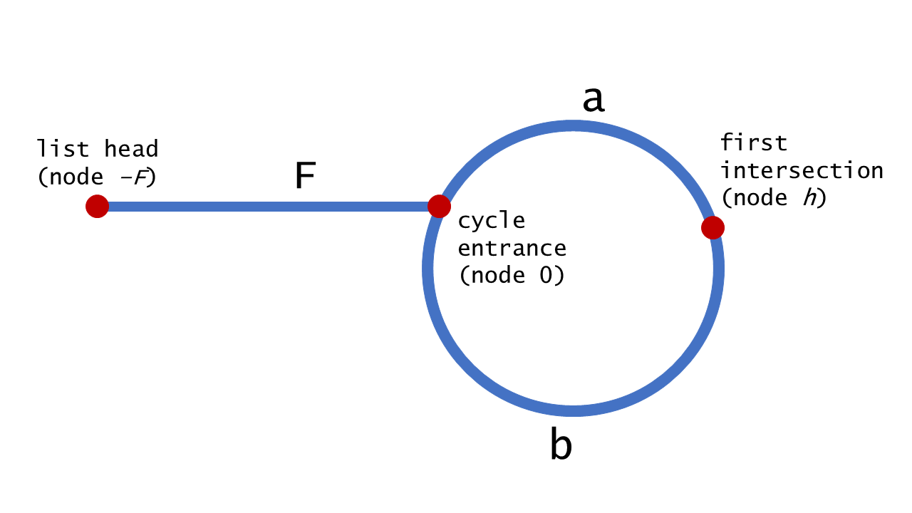

给定一个链表，返回链表开始入环的第一个节点。 如果链表无环，则返回 null。
为了表示给定链表中的环，我们使用整数 pos 来表示链表尾连接到链表中的位置（索引从 0 开始）。 如果 pos 是 -1，则在该链表中没有环。
Approach 1: Hash Table
用一个 Set 保存已经访问过的节点，我们可以遍历整个列表并返回第一个出现重复的节点。
Sample Code
public class Solution {
public ListNode detectCycle(ListNode head) {
Set<ListNode> visited = new HashSet<ListNode>();
ListNode node = head;
while (node != null) {
if (visited.contains(node)) {
return node;
}
visited.add(node);
node = node.next;
}
return null;
}
}
Complexity Analysis
- 时间复杂度: \(O(n)\)
- 空间复杂度: \(O(n)\)
Approach 2: Floyd Method
Part 1: Find the intersection

环中的节点从 0 到 C−1 编号，其中 C 是环的长度。非环节点从 −F 到 −1 编号，其中 F 是环以外节点的数目。 F 次迭代以后，慢指针指向了 0 且快指针指向某个节点 h ，其中 \(F \equiv h \pmod C\) 。这是因为快指针在 F 次迭代中遍历了 2F 个节点，且恰好有 F 个在环中。继续迭代 C−h 次，慢指针显然指向第 C−h 号节点，而快指针也会指向相同的节点。原因在于，快指针从 h 号节点出发遍历了 2(C−h) 个节点。\[\begin{aligned} h + 2(C-h) &= 2C - h \\ &\equiv C-h \pmod C \end{aligned}\] 因此，如果列表是有环的，快指针和慢指针最后会同时指向同一个节点，因此被称为 相遇 。
Part 2: Find the cycle's beginning

利用已知的条件：慢指针移动 1 步，快指针移动 2 步，来说明它们相遇在环的入口处。（下面证明中的 tortoise 表示慢指针，hare 表示快指针）\[\begin{aligned} 2 \cdot distance(tortoise) &= distance(hare) \\ 2(F+a) &= F+a+b+a \\ 2F+2a &= F+2a+b \\ F &= b \\ \end{aligned}\]因为 F=bF=b ，指针从 hh 点出发和从链表的头出发，最后会遍历相同数目的节点后在环的入口处相遇。
Sample Code
public class Solution {
private ListNode getIntersect(ListNode head) {
ListNode tortoise = head;
ListNode hare = head;
// A fast pointer will either loop around a cycle and meet the slow
// pointer or reach the `null` at the end of a non-cyclic list.
while (hare != null && hare.next != null) {
tortoise = tortoise.next;
hare = hare.next.next;
if (tortoise == hare) {
return tortoise;
}
}
return null;
}
public ListNode detectCycle(ListNode head) {
if (head == null) {
return null;
}
// If there is a cycle, the fast/slow pointers will intersect at some
// node. Otherwise, there is no cycle, so we cannot find an e***ance to
// a cycle.
ListNode intersect = getIntersect(head);
if (intersect == null) {
return null;
}
// To find the e***ance to the cycle, we have two pointers traverse at
// the same speed -- one from the front of the list, and the other from
// the point of intersection.
ListNode ptr1 = head;
ListNode ptr2 = intersect;
while (ptr1 != ptr2) {
ptr1 = ptr1.next;
ptr2 = ptr2.next;
}
return ptr1;
}
}
Complexity Analysis
- 时间复杂度: \(O(n)\)
- 空间复杂度: \(O(1)\)